Du musst dich nicht mit Durchschnitt zufriedengeben.
Job, Familie, volle Woche, und irgendwie bleibt dein Körper dabei auf der Strecke. Der Bauch geht nicht mehr weg, der Rücken meldet sich nach langem Sitzen, und fit fühlst du dich eigentlich nur noch auf alten Fotos. Das muss nicht so bleiben. Ich helfe dir, einen Körper aufzubauen, der stark, beweglich und belastbar ist und auch so aussieht.
COACHING ANFRAGENVielleicht hast du dir das auch schon eingeredet.
Ich wollte nicht nur stark sein.
Meine ersten Jahre im Sport habe ich an Geräten verbracht. Irgendwann reichte mir das nicht mehr. Ich wollte athletisch werden: stark, aber auch beweglich, schnell und ausdauernd. Und dabei so aussehen, wie man sich einen Actionhelden vorstellt. Mit Standardlösungen kommt man da nicht weit. Also habe ich in über 15 Jahren Training drei Dinge grundlegend verändert.
Ganzkörpertraining statt Splits. Mehrdimensionale Bewegungen, eigenes Körpergewicht und freie Gewichte wie Langhantel und Kettlebell. Training, das dich im Alltag stärker macht und nicht nur im Spiegel.
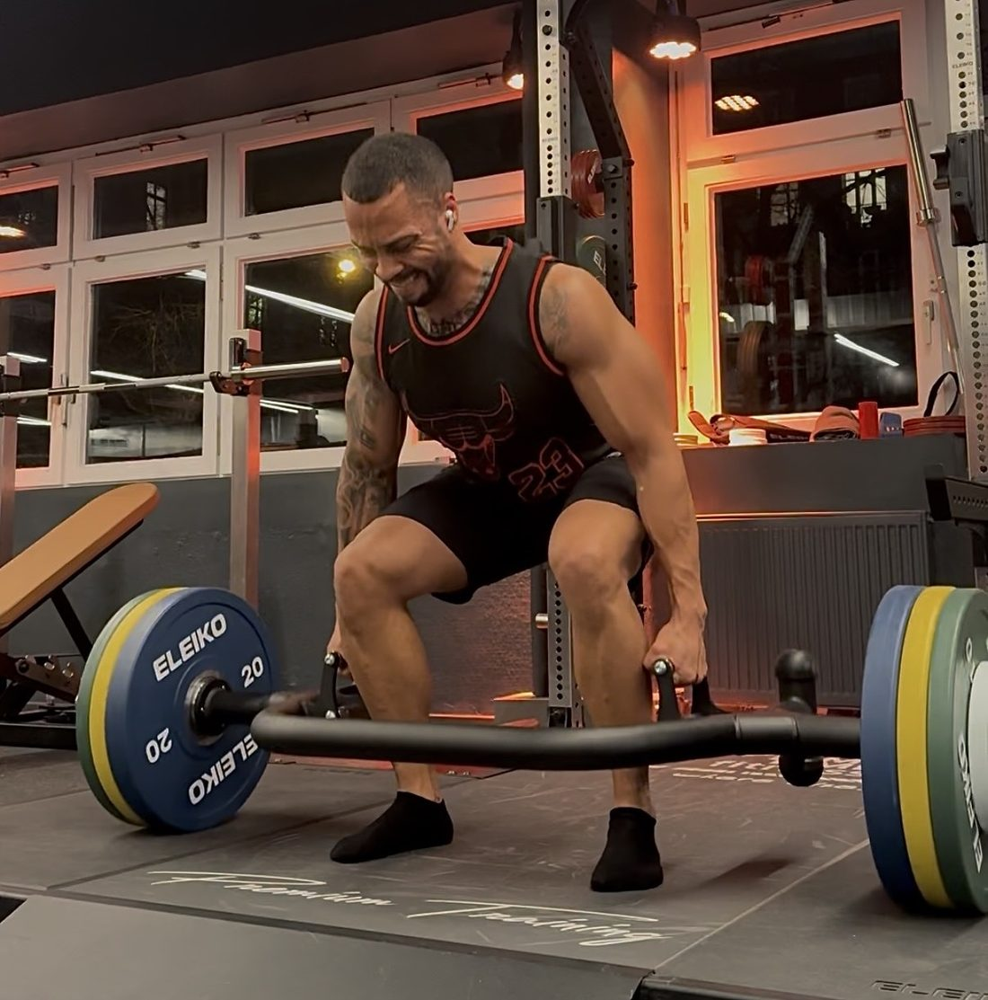
Seit ich 20 bin, arbeite ich im Büro. Ich kenne also den verspannten Nacken, die verkürzten Hüftbeuger und den schwachen Core, die vom vielen Sitzen kommen. Dafür habe ich ein eigenes Mobility-System entwickelt, das genau diese Baustellen angeht.
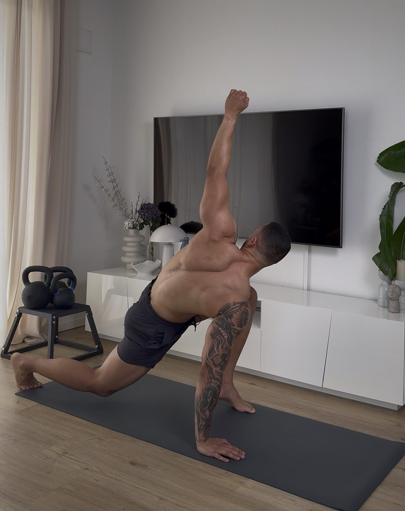
Bei meiner Ernährung mache ich keine Kompromisse mehr: echte Lebensmittel, ausgewogene Mahlzeiten, viele Nährstoffe. Ich zähle weniger Kalorien und achte mehr darauf, was hinter den Kalorien steckt.
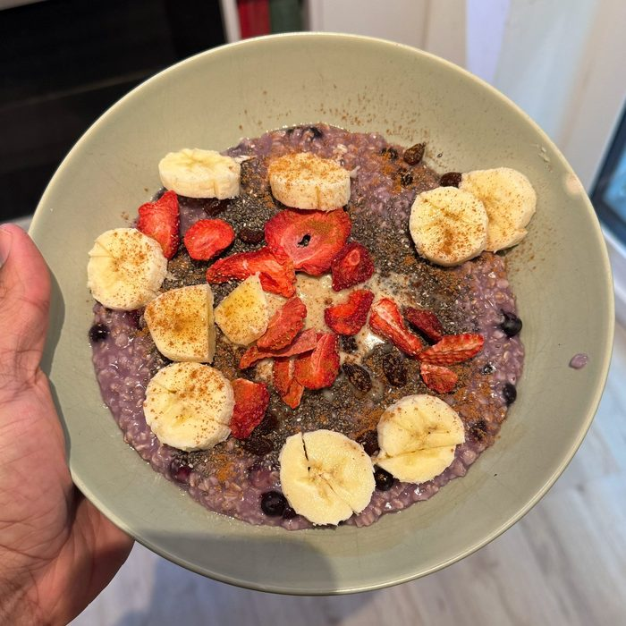
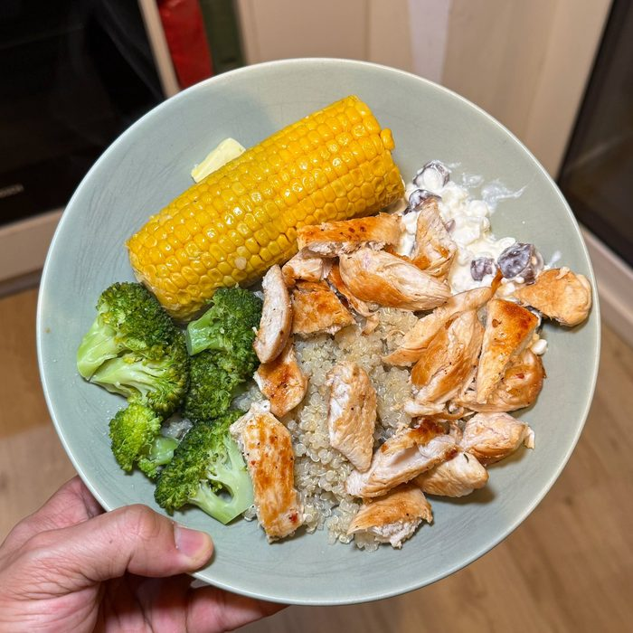
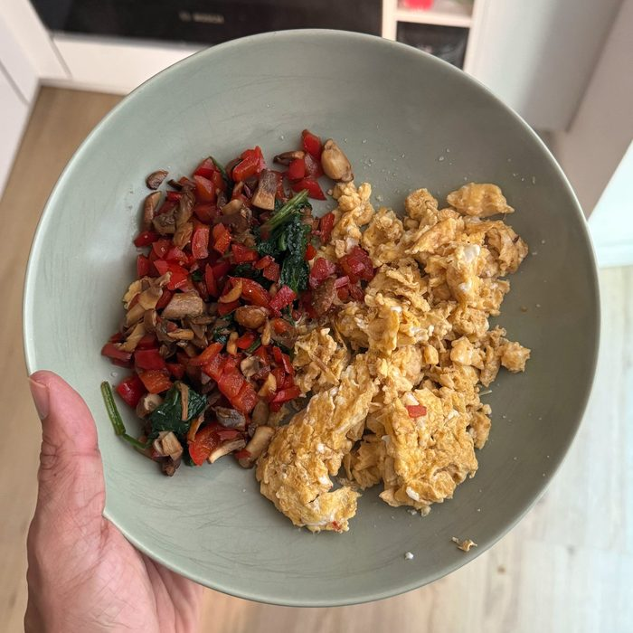
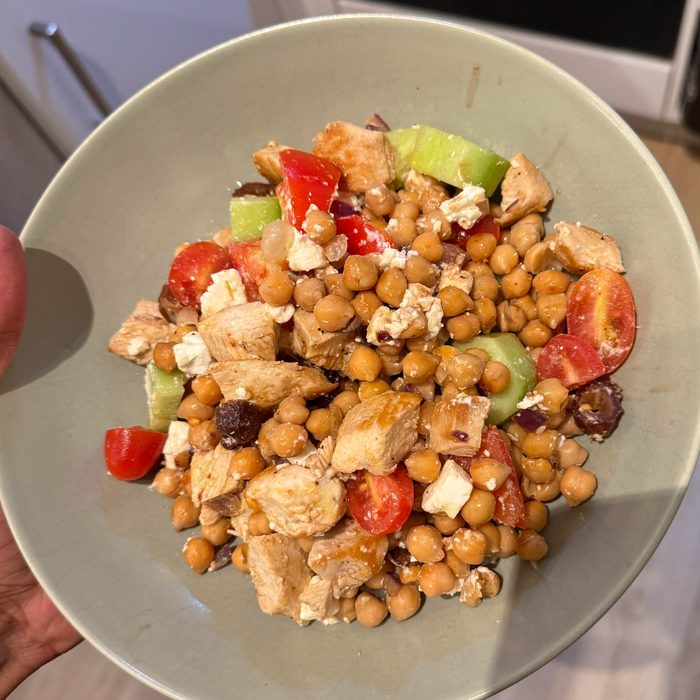
Keine Copy-&-Paste-Pläne.
Jeder Klient startet bei mir mit einem persönlichen Onboarding. Ich schaue mir deinen Alltag genau an: Job, Familie, Schlaf, Essgewohnheiten und was du schon probiert hast. Danach passe ich meine Systeme auf dich an, nicht umgekehrt. Und wenn sich dein Leben ändert, ändert sich dein Plan mit.

Männer mit vollem Kalender. Echte Ergebnisse.
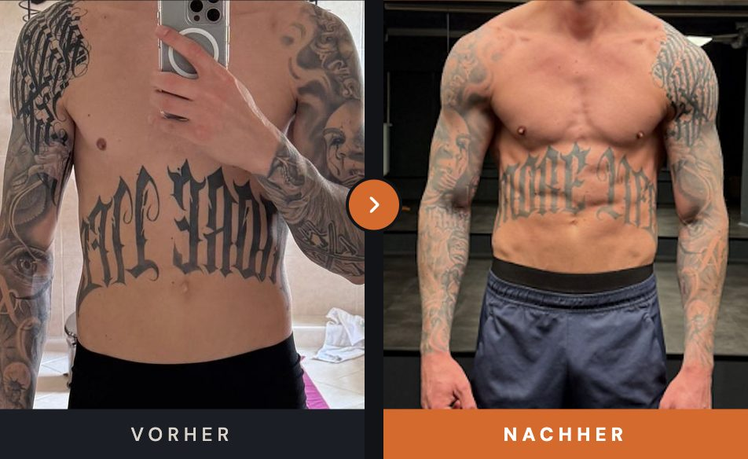
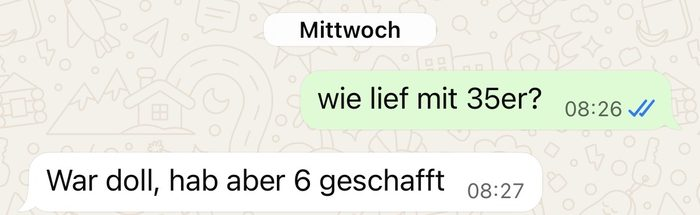
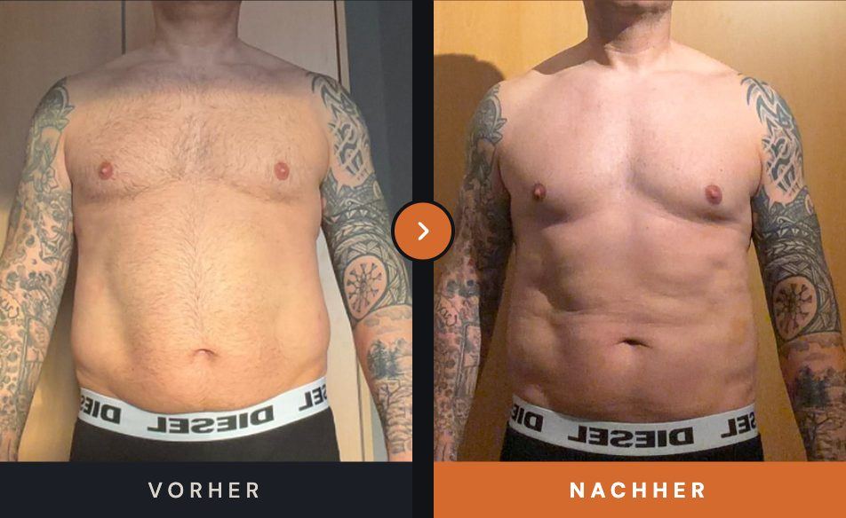


Am Ende wirst du feststellen: Es war gar nicht so schwer, wie du dachtest.
Das sagen meine Kunden.

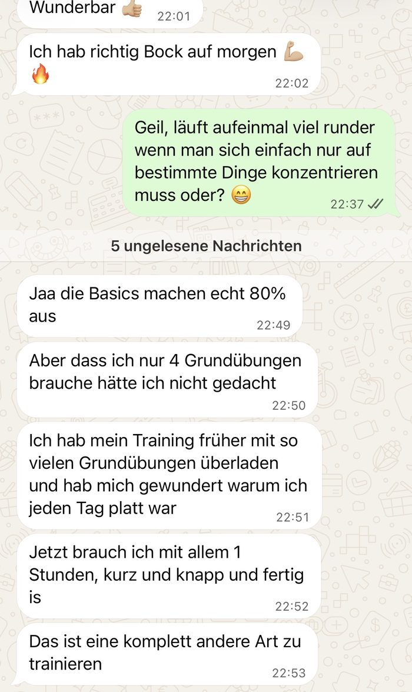
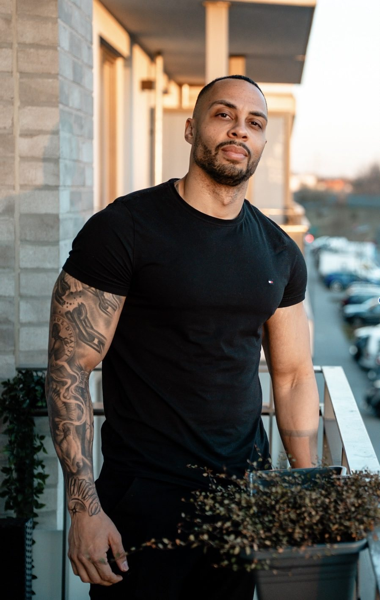
Ich stehe nicht den ganzen Tag im Gym.
Ich bin Vater von zwei Kindern und arbeite 50 Stunden die Woche. Daneben mache ich Kraftsport und Kampfsport, und wann immer es geht, bin ich mit der Familie draußen unterwegs. Ich bin kein Fitnesscoach, der so aussieht, weil Training sein ganzer Tag ist.
Ich kenne die Realität mit wenig Zeit und wenig Energie am Abend. Genau dafür sind meine Systeme gebaut.
Dann bist du hier richtig.
Du willst nicht nur den Bauch loswerden, sondern einen Körper aufbauen, der stark und beweglich ist? Du willst deine Ernährung endlich in den Griff bekommen, ohne jeden Bissen zu zählen? Du willst wieder mehr Energie haben, für die Arbeit, für deine Familie und für dich selbst?
Dann lass uns sprechen. Meine Plätze im Coaching sind begrenzt, weil ich jeden Klienten persönlich betreue.
JETZT PLATZ ANFRAGENBereit? Dann lass uns reden.
Füll das kurz aus. Ich melde mich innerhalb von 24 Stunden persönlich bei dir per WhatsApp. Das Gespräch ist kostenlos und unverbindlich.
Häufige Fragen
Was kostet das Coaching?
Das hängt davon ab, wie intensiv du begleitet werden willst. Lass uns sprechen, wo du stehst und was du brauchst. Danach mache ich dir ein konkretes Angebot, und du weißt genau, was du realistisch erreichen kannst und welches Investment dafür nötig ist.
Brauche ich ein Gym?
Beides geht. Im Gym oder zuhause mit Kettlebell und deinem eigenen Körpergewicht. Ich passe den Plan an deine Situation an.
Muss ich Kampfsport machen?
Nein. Fighting Shape ist das Ziel, nicht die Voraussetzung. Du wirst stärker, beweglicher und fitter, ob du je mit Kampfsport anfängst, entscheidest du. Trainierst du schon, plane ich dein Vereinstraining mit ein. Wir ergänzen genau das, was dir dort fehlt, statt dich zusätzlich platt zu machen.
Wie viel Zeit brauche ich?
3–4 Einheiten pro Woche à 30–60 Minuten, plus ein paar Minuten Mobility am Tag.
Muss ich Kalorien zählen?
Nicht zwingend. Du bekommst entweder einen festen Plan mit klarer Struktur oder mehr Flexibilität durchs Tracken. Das Ziel: Langfristig wird deine Ernährung zum Selbstläufer. Ganz ohne Tracken.